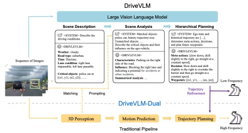
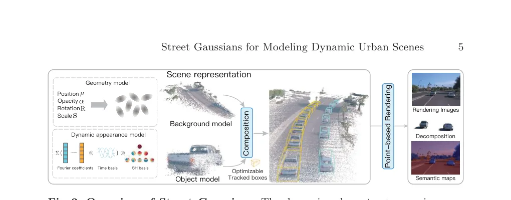
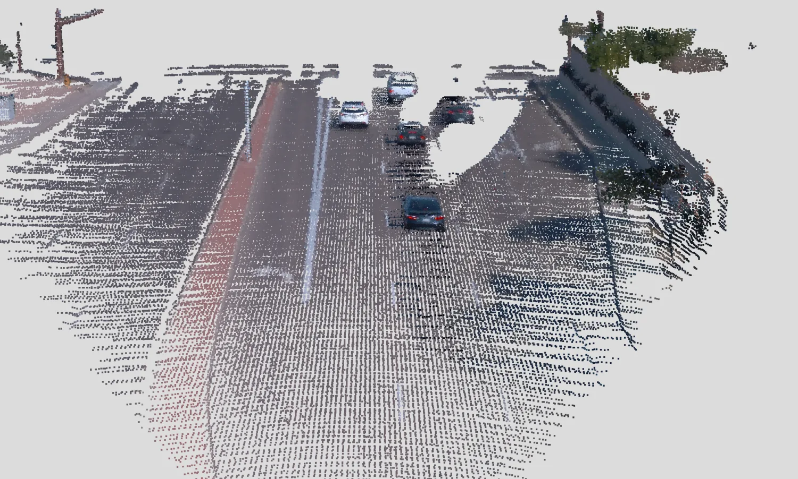
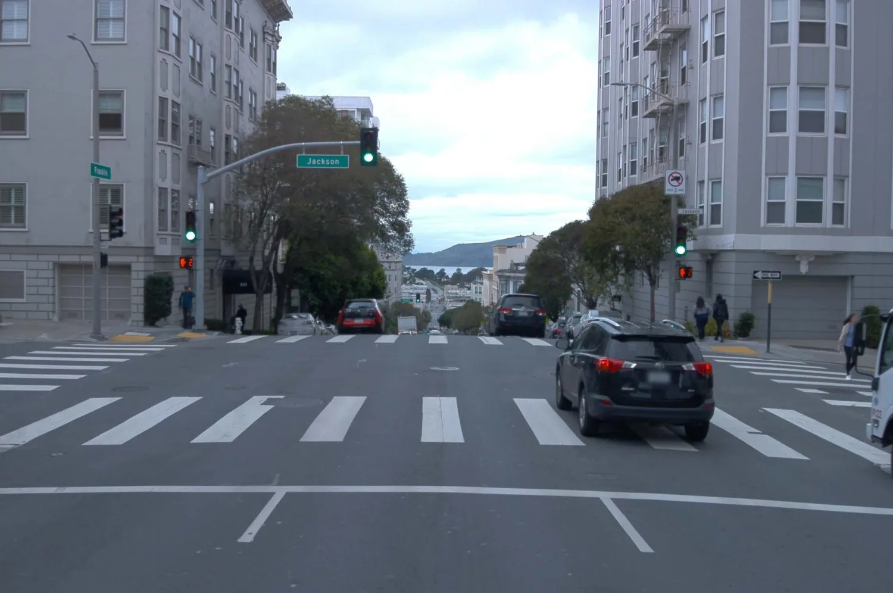
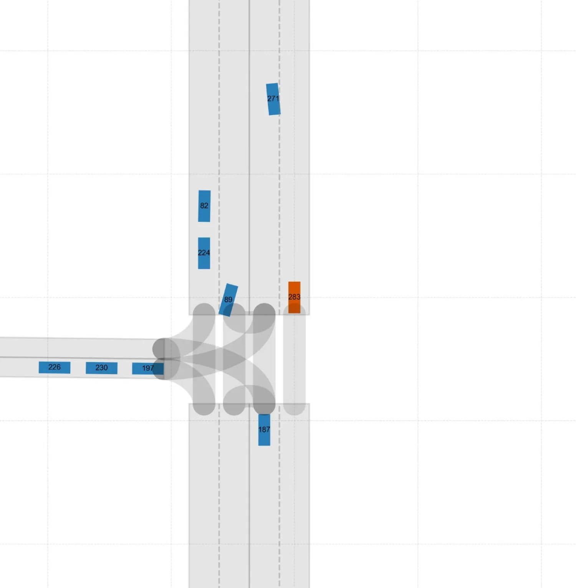

视觉—语言—行动
面向复杂真实环境，统一感知、推理、规划与控制。
面向具身智能的基座模型
我是詹锟，现任理想汽车基座模型与自动驾驶负责人。我致力于构建连接感知、语言、决策与行动的整车级 AI 系统，并推动前沿研究真正走向量产。
北京 / 圣何塞 理想汽车 自动驾驶 · 基座模型 · 具身智能
总计引用指标来自 Google Scholar ↗ · 更新于 。 论文列表及逐篇引用为 快照。
我的工作聚焦于统一物理智能体需要的关键能力：理解三维场景、推理意图与风险、在不确定环境中规划，并以实时、可靠的方式执行。
打造物理世界 AGI，以自动驾驶为起点，逐步拓展至机器人与智能空间。
面向复杂真实环境，统一感知、推理、规划与控制。
仿真、生成式场景模型、闭环评测，以及从物理反馈中学习。
车端推理、模型与芯片协同、数据引擎及车队规模的可靠部署。
关于技术、组织与长期价值的八条原则。
对目标有野心， 对选择有克制， 对结果有担当。
我希望在 AI 时代做的，不只是跟上技术变化，而是把智能的边界往前推，让技术在真实世界里产生价值，也让一群优秀的人，能够长期一起做成难事。
这八条，不是我已经做到的事，而是我做研究、带团队、做取舍时，对自己的要求。
点击各条原则，展开完整思考。
我认同的愿景，必须能回答：为什么做这件事，最好的资源投向哪里，哪些机会值得放弃。
漂亮的话不算数。当短期收益与长期目标发生冲突时，选择才算数。真正相信的东西，应该能在我的决策里被看见。
我重视合理回报，但不把利益占全当作目标。不是每一份收益都要自己拿走，也不是所有环节都要自己占住。
比起提前锁定自己的份额，我更在意能否通过合作和分享，提高把大事做成的概率。克制不是缺少野心，而是把野心放在更重要的事情上。
一件事值得做，不等于值得我们做。别人都在做，不构成我们必须做的理由。
我不追求看起来什么都有，更在意关键问题有没有真正解决。阶段性的成绩值得争取，但不能让它替换最终的目标。对不在主线上的好机会，说不也是责任。
我的责任，不是替所有人做判断，而是把共同方向讲清楚，把信任和协作建立起来。
我希望建设的，是一个让优秀的人敢于判断、愿意合作、能够成长的环境。遇到挫折，还能一起把事情往前推，比一时的人才阵容更重要。
已经承诺的事情，要认真兑现；尚未被证明的方向，也应该有机会被验证。
我不接受用“研究”回避交付，也不愿意用排满每个人的时间，换取一种管理上的安全感。确定的任务要高效推进，不确定的探索要有时间、有资源、有耐心。
我既关心智能的上限，也关心它能不能在现实的算力、成本和时延约束下真正用起来。
让同样的资源支撑更强的模型，让更强的模型服务更多人，本身就是值得投入的核心问题。算法突破与工程效率不该被割裂：效率不只是省下多少，更是让原本做不到的事情变得可行。
我关心的不只是模型这一次能做什么，还关心它能否从交互与反馈中学习，让下一次做得更好。
我把持续学习看作值得长期投入的核心方向。对模型如此，对自己和团队也一样：不能只是不断重复工作，而要让每一次经历改善下一次判断。
AI 不应该只是我们研发的产物，也应该成为研发能力的一部分。
我希望每一代模型，都能帮助我们更快发现问题、验证想法、改进系统。衡量进步，不只看这一版有多强，也看它能否让下一版的突破来得更快。
把智能做深，把事情做成，让进步持续发生。
关于团队领导、量产系统、模型发布与研究成果的部分关键节点。
负责理想汽车基座模型与自动驾驶路线图，覆盖理想同学 VLA、Mind GPT、世界模型、强化学习、基础设施与车端部署。
发布理想汽车软件与具身智能路线图，将智能汽车能力与更广阔的物理世界 AI 技术栈连接起来。
参与 ReconDreamer、StreetCrafter 与 DrivingSphere，推进自动驾驶场景重建、可控生成和闭环四维仿真。
发布 DriveVLM，并参与 Street Gaussians 与 TOD3Cap，连接多模态推理、动态城市重建和三维场景理解。
推动自动驾驶技术栈从高速 NoA、城市 NoA，演进至端到端、VLM 辅助和 VLA 架构，并部署于量产车辆。
负责 L4 RoboTaxi 项目的预测与前决策算法，以及面向量产的自动驾驶系统研发。
基座模型与自动驾驶负责人
美国研发中心负责人
L4 预测与规划算法负责人
北京航空航天大学 · 导航、制导与控制硕士
研究方向聚焦于目标识别与跟踪。
北京科技大学 · 自动化学士
代表研究覆盖 VLM/VLA、世界模型、三维重建、规划与仿真。

VLM · 2024将多模态推理与自动驾驶感知、规划和交互相结合。

3DGS · ECCV 2024使用 Gaussian Splatting 建模动态城市场景。

世界模型 · CVPR 2025通过在线修复构建驾驶场景重建世界模型。

视频扩散 · CVPR 2025基于可控视频扩散模型的街景合成。

4D 仿真 · CVPR 2025构建面向闭环仿真的高保真四维世界。
用于记录模型发布、公开演讲、研究成果和重要节点，不需要维护完整博客。
欢迎就研究交流、公开演讲、技术顾问或合作机会直接联系。